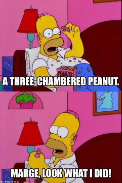

--Ramana
Last week, as maybe you saw in my note to you, I tried, after recent surgery, to write a new Mind-Tickler.
It did not get finished.
Doer-Judy failed.
I mean, shouldn't I have been able to pump that baby out and be back in bed with the chopped-up foot elevated by noon?
But no. Because who are we kidding?
Whatever creates The Mind-Tickler, whatever sends the ideas, whatever removes without mercy some of my favorite bits, whatever abandons one completed Tickler at 6pm the night before, insisting on starting another even if it means I’m still writing at midnight…
whatever that is,
It does what it wants. I am merely its typist.
Now granted, lovely Mind-Tickler readers may be dubious of this apparently spiritually-correct claim.
Perhaps because, while most folks generally love the idea of nondoership, when it comes to living everyday life,
most really don’t believe a single word of it.
What we do believe is that stopping smoking, drinking or overeating is up to us, that we can make ourselves live longer with exercise and cauliflower, that we can force ourselves to clean the house, be more productive, not get triggered by family. And that, by the power of our meditation practice, inquiries, and studying up on Krishnamurti, we can will enlightenment to happen.
Nondoership is a grand spiritual idea when it comes to the weather, but not if it means our politicians are no more the doer than we are.
No, in everyday life, humans are consistently and furiously insistent that it’s all up to us.
Little ol’ us, who actually has zero idea how to not say something stupid, or bring the nice feelings.
Sure, let’s insist these mixed-up, flawed selves have more power over events and likes and thoughts and feelings than existence has.
The self takes - as opposed to being given- responsibility, blame, fault, and accountability.
The finger always points to the self.
In fact, dare to suggest responsibility is not ours, and folks get downright crabby. Outraged, even.
“Don’t tell me this isn’t someone’s fault! A good person takes accountability! How dare you let humans off the hook!”
We actually fight for the ideas of right actions, consequences, guilt, and shame.
Not noticing that all those ideas apply only to doers.
And that every one of them feels like crap.
So we might wonder what wants human responsibility so much that it ignores all the misery that comes with it.
And what tries to have it both ways with the ol’ sometimes ploy?
“OK yeah, I’m not the doer of rain but I decide to lift my arm or quit my job or have another beer. I am in charge of yelling, liking clean countertops, and being uncomfortable in crowds. So sometimes I AM the doer.”
Doership is not a sometimes thing.
We either are the doer- in which case shouldn’t we be much better at it by now?- or we’re not.
It's one or the other. Because control doesn’t come and go.
If it does, then we’re not in control of control.
Existence always does as it pleases. The self just takes the credit or blame.
Meanwhile, this may be where the mind helpfully chimes in, “But if we’re not in control, we’ll weigh 500 lbs, politicians will go unchecked, jobs won’t get done. There will be chaos, unproductivity, failure, and death in the streets.”
All of which is nonsense the self drums up to sustain its own delusion.
We’ve never been the doer and things have always happened and gotten done, anyway.
So nothing actually changes by considering that we’re not responsible for absolutely everything.
It’s just that the weight of thinking we’re supposed to know how to do existence’s job-
Well, it’s heavy.
Responsibility makes the self fearful, sad, self-hating. Doership makes the self feel real, important, and necessary.
Perhaps that’s a burden we don’t have to carry.
Perhaps it could be lighter to smoke, or try to quit, knowing it’s a happening whose decision and outcome may not be up to us. Perhaps it could be lighter to fight the political fight or leave an abusive situation, knowing these are happenings that will go as existence pleases.
Perhaps it’s possible to feel lighter, while living the exact same life, just without self recrimination and fault.
Who knows, we might even discover a sense of peace, curiosity and fascination, as we watch to see what happens
without us.
What a relief, letting responsibility slide off onto existence’s broad shoulders,
where it’s actually been all along.
and get your Mind-Tickled every week.
Watch Judy on Buddha at the Gas Pump
"The freest of my actions just happens like hiccups inside me or like a bird singing outside me."
--Alan Watts
"Who grows the oranges in the orange tree? Who grows the grass? Who takes care of the world and the earth? The same power that takes care of all the things on this planet. “
--Robert Adams
